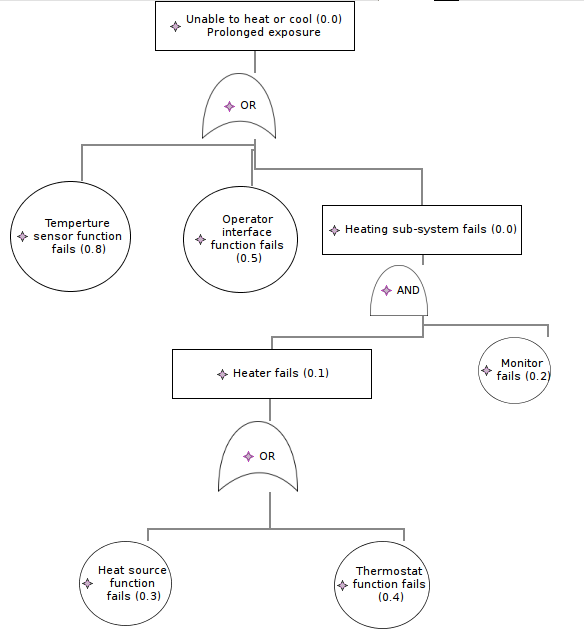
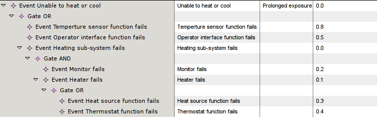

To start a new EMFTA model using the wizard:

To start a new EMFTA model, proceed as follow:
Once the model is created, you need to switch to the Sirius perspective. Right click on the project that contains your file, select Configure and then Convert to modeling project. Finally, right click on the project and select Viewpoints selection and select EMFTA.
You can then unfold the different object of the emfta file. Unfold the first object and right click on it. Click on New representation and finally choose the representation you want: table or tree.
The tree view provide a convenient visualization capability to see the Fault-Tree. In the graphical view, you can run all the analyses.
The table view is more an edition capability to add new gates, events and add information (description, probability, etc.)
To add gates or events, you select the object where you will add a new event or gate and make a right click. You an then select add a gate (for an event) or events (for a gate).
Also, to define the type of gate you need (AND or OR), you can specify if under the Eclipse properties.
Adding description and properties can be done in the table by editing the appropriate line. Once you save, the properties (probability, description) are propagated into the graphical notation.